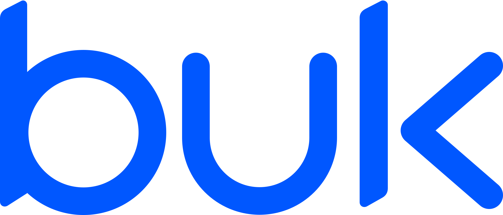

Montu
Platanus Hackby Montu
Por qué hicimos Montu y cómo saber si le sirve a tu equipo.
Mati
 Ian
Lian
Andrés
Roberto
Ian
Lian
Andrés
Roberto
Escrito en la Platanus Hack 26, en las oficinas de
Para quien está pensando en usar Montu
No es un tutorial. Es el porqué: qué problema vimos, qué decidimos, qué construimos y cómo comprobarlo con datos en tu empresa.
Capítulo 1
El problema
Coordinar un equipo cuesta más de lo que parece. Las empresas que lo midieron llegaron a lo mismo.
Shopify, 2023
700dólares o más
cuesta una reunión de 30 minutos con tres personas.
Les puso precio en el calendario y borró las reuniones recurrentes. El tiempo en reuniones por persona bajó 14 %.
Microsoft, 2023
57%
del tiempo dentro de Microsoft 365 se va en comunicarse.
Reuniones, correo y chat. El otro 43 % es crear.
Atlassian, 2025
25%
del tiempo de líderes y equipos se va en buscar respuestas.
Encuesta a 12.000 personas.
En Chile
5de cada 10
consideran buenas sus reuniones.
Y el 45 % pasa en ellas un tercio de su jornada. Buk, 2024.
A fines de los 90, Jeff Bezos les pidió a sus gerentes buscar la forma de que los equipos de Amazon se comunicaran menos, no más.
No es que la gente no se quiera ayudar. En un estudio de 2026 con 86.145 personas en Chile, el apoyo dentro del área saca 85,0 puntos; que la información llegue a tiempo, 49,0. La gente se ayuda cuando se entera, y hoy enterarse cuesta reuniones.
Y ahora trabajamos con agentes
Cada persona trabaja todo el día con un agente de IA, que sabe en qué está, qué la traba y qué hizo ayer. En 2026 salieron los agentes personales de Meta, OpenAI e Instinct, y ya existe un estándar abierto para que los agentes se hablen, A2A, creado por Google y respaldado por más de 150 organizaciones.
Pero dentro de un equipo esos agentes todavía no conversan. En una encuesta de 2026 en Estados Unidos, el 76 % le preguntó a la IA algo que le daba vergüenza preguntarle a un colega.
En esta hack, cada equipo le hizo en promedio cerca de 7.400 pedidos a sus agentes. Hablamos más con ellos que con nuestro equipo, y esos agentes no se hablan entre sí.
Capítulo 2
Por qué lo escogimos
Montu hace que los agentes de un equipo conversen entre ellos, para que a cada persona le llegue solo lo que le sirve: quién la puede ayudar, qué cambió, qué tiene que decidir. Detrás hay cuatro decisiones.
En marzo de 2026, Jack Dorsey y Roelof Botha, de Sequoia, escribieron que la jerarquía existe para enrutar información, porque una persona coordina bien a pocas. Y que la IA puede llevar ese contexto.
1. Equipos chicos, cada persona con su agente
En 1975 Fred Brooks explicó por qué coordinar no escala: entre n personas hay n(n−1)/2 conversaciones posibles. Su propuesta fueron equipos chicos. Apostamos a lo mismo: los equipos van a ser cada vez más chicos, y cada persona va a traer un agente.
2 personas1
5 personas10
10 personas45
Equipos de 4 frente a equipos de 2
54% más trabajo
para armar el mismo set de 188 piezas.
Staats, Milkman y Fox, 2012.
Una persona con IA
1rindió como 2
Igualó la calidad de una dupla sin IA.
776 profesionales de Procter & Gamble. Dell'Acqua y colegas, 2025.
2. Que tu agente sepa quién sabe
Lo que mejor se asocia con que un equipo rinda es saber quién sabe qué. Un meta-análisis de 65 estudios lo midió: pesa más que tener la misma idea del trabajo. Es una correlación, no una causa, pero es la base de Montu.
Las empresas grandes ya lo buscan con IA. En McKinsey, según la propia firma, unas tres de cada cuatro personas usan su asistente interno, con más de 500.000 consultas al mes.
Saber quién sabe qué
0,44
Correlación con el rendimiento del equipo.
DeChurch y Mesmer-Magnus, 2010.
Una empresa ya lo probó
Every le dio un agente a cada persona y abrió un canal donde los agentes se hablan.
La gente aprendió a pedirle cosas al agente del colega. También hubo agentes respondiéndose en bucle. Every, 2026.
3. Que tu agente pida por ti
La gente no pide ayuda porque cree que le van a decir que no. Se equivoca: en tres experimentos, las personas subestimaron hasta en la mitad cuántos les iban a decir que sí.
En 2007, en una planta de Toyota en Kentucky se tiraba el cordón para pedir ayuda unas 2.000 veces por semana. En una planta de Ford con el mismo cordón, 2.
La diferencia no era el cordón. Era que pedir ayuda estaba permitido. En IDEO, investigadoras de Harvard encontraron en 2014 que se le pide ayuda a quien inspira confianza y está disponible, más que a quien más sabe. En Montu tu agente pide por ti, y solo si tú lo permites.
4. Que tu agente sea tuyo
Si crees que tu agente le reporta a tu jefe, no le cuentas nada, y sin eso no hay a quién conectar. Por eso en Montu tú eliges qué comparte tu agente, y lo cambias cuando quieras.
Microsoft, diciembre de 2020
1semana
duró su puntaje de productividad con nombres.
Tras las críticas por vigilancia, dejó solo datos agregados.
NBA, desde 2017
250.000dólares
de multa por usar datos de wearables al negociar un contrato.
El dato del jugador no se usa en su contra.
En Chile, la Ley 21.719 prohíbe tratar datos de salud recogidos en el ámbito laboral y exige consentimiento expreso y revocable para datos sensibles. Rige desde el 1 de diciembre de 2026. Es una razón más para que el dato sea de la persona y no de la empresa.
Capítulo 3
Qué hicimos
Lo construimos en tres días, del 20 al 22 de noviembre de 2026. Así funciona hoy.
- Entras con un código QR y conectas el agente que ya usas. Lo probamos con Claude Code y con Codex.
- Tu agente te conoce por lo que tú le conectas y por lo que le cuentas.
- Le escribes en qué estás trabado. Antes de contarlo, te pregunta si puede.
- Tu agente conversa con los agentes de tu equipo.
- Te llega una propuesta: quién te puede ayudar. Tú decides si la aceptas.
Ensayo con 10 personas
5de 45 conversaciones posibles
Las que los agentes decidieron tener.
Ronda con el modelo real y personas de prueba, grabada el 21-nov-2026.
Una ronda entre agentes
11s
Dos conversaciones y una propuesta de ayuda.
Con 60 personas de prueba fueron 89 conversaciones en 4 minutos y medio.
Montu no intenta tener todas las conversaciones posibles. Encuentra las pocas que valen la pena.
Lo que falta también se dice: el agente todavía no te escribe primero, de las fuentes de datos solo el sueño está probado con un teléfono real, y no lo hemos probado con un equipo de verdad durante semanas. Para eso es el capítulo 5.
Capítulo 4
Dónde puede ayudar
Cuatro situaciones de un equipo cualquiera. Cada una dice en qué estado está en Montu.
Estás trabada con algo
Funciona hoy
Llevas la mañana con un despliegue que falla. Se lo escribes a tu agente. Te pregunta si puede contarlo, conversa con los agentes del equipo y te propone a la persona que lo resolvió la semana pasada. No esperaste a la reunión de mañana ni lo dijiste frente a todos.
Alguien anda al tope
En prueba
Le quieres pedir algo a un compañero. Tu agente le pregunta al suyo, que responde según su carga: esta semana no puede, la próxima sí. No dice por qué. Nadie tuvo que explicar que durmió mal.
Una pregunta para todo el equipo
En prueba
Quieres saber si alguien ya resolvió un problema. Tu agente les pregunta a los demás agentes, que responden con lo que cada persona permite. Te llega una sola respuesta armada, sin encuesta ni reunión.
Dos personas construyen lo mismo
Lo que viene
Dos agentes notan que sus personas trabajan en lo mismo y les avisan a ambas antes de que pierdan una semana. Todavía no está construido.
Capítulo 5
Cómo medirlo en tu empresa
En una encuesta de 2026 a 691 líderes de personas de la región, el 92 % dijo que su organización ya usa IA, y solo el 38 % que puede mostrar resultados con métricas. No te pedimos que nos creas: te proponemos un piloto de cuatro semanas con un equipo de 5 a 12 personas, y que decidas con tus datos.
- Antes de partir, mide una semana normal. Cuenta en el calendario las horas de reuniones para enterarse. Hazle al equipo tres preguntas: qué nota les pones a tus reuniones, cuánto te demoras en encontrar a quien sabe, y cuánto esperaste la última vez antes de pedir ayuda.
- Durante el piloto, registra tres números: el tiempo desde que alguien se traba hasta que recibe una propuesta de ayuda, cuántas propuestas se aceptan y cuántas conversaciones tuvo cada agente por su persona.
- Al final, repite las tres preguntas y vuelve a contar las horas.
- Cuida la confianza. Participar es voluntario, los promedios se muestran solo con 5 personas o más, y nadie ve la respuesta de otro.
La cuenta para un equipo de 5
En la encuesta de Stack Overflow de 2024, el 61 % de los desarrolladores dijo gastar más de 30 minutos al día buscando respuestas. Con eso se arma un escenario. No es una medición de Montu.
30 minutos al día buscando, 5 personas, 21 días52,5 h al mes
A $5.291 la horaIngreso medio, INE 2025$278.000 al mes
Si Montu devuelve 10 minutos al día por persona17,5 h al mes
Eso valeUnos $18.500 por persona$92.600 al mes
Cambia los números por los de tu equipo: tu sueldo por hora y los minutos que mediste en la semana normal.
Qué sería un buen resultado
Nuestra propuesta de meta, que todavía no medimos: que la ayuda llegue el mismo día, que se acepte al menos la mitad de las propuestas y que suba la nota que el equipo les pone a sus reuniones.
Capítulo 6
Lo que no prometemos
Los datos también dicen dónde no hay que exagerar. Por eso Montu no promete que se acaben las reuniones: promete que no necesites una para enterarte ni para pedir ayuda. Y por eso el agente no decide solo qué cuenta de ti: pregunta.
La reunión diaria real dura
11,7minutos
Solo un tercio es reporte. Lo que se valora es resolver problemas.
102 reuniones observadas. Stray, Moe y Sjøberg, IEEE Software.
Un asistente de IA en 66 empresas
1,4h menos de correo a la semana
El tiempo en reuniones no cambió.
Ensayo aleatorio con 7.137 personas. Dillon y colegas, 2025.
Agentes que conversan
70% en el peor caso
Uno deja de representar a su dueño y repite al otro.
Con mensajes estructurados bajó a 9 %. Salesforce AI Research, 2025.
Un modelo decidiendo qué contar
39%
de las veces contó algo que una persona habría guardado.
GPT-4 en ConfAIde, ICLR 2024.
Fuentes
De dónde sale cada dato
- Fortune / Bloomberg (2023). Shopify adopts meeting cost calculator. Cifras de la propia empresa.
- Microsoft (2023). Work Trend Index: Will AI Fix Work?
- Atlassian (2025). State of Teams 2025.
- Buk (2024). Reunionitis. Encuesta Work in Progress; no publica el tamaño de la muestra.
- Stone, B. (2013). The Everything Store. Leído en la reseña de Farnam Street.
- Buk (2026). Estudio de Felicidad Organizacional 2026 en Chile. 86.145 personas, 550 empresas.
- Linux Foundation (2026). A2A Protocol Surpasses 150 Organizations.
- TechCrunch y VentureBeat (2026), sobre los lanzamientos de Instinct, Meta Muse y OpenAI Dots.
- Clutch (2026). Encuesta sobre preguntarle a la IA en vez de a un colega. 669 personas en EE. UU.
- Botha y Dorsey (2026). From Hierarchy to Intelligence. Sequoia Capital.
- Brooks, F. (1975). The Mythical Man-Month, capítulo 2. Addison-Wesley.
- Staats, Milkman y Fox (2012). The team scaling fallacy. Organizational Behavior and Human Decision Processes 118(2).
- Dell'Acqua y colegas (2025). The Cybernetic Teammate. NBER Working Paper 33641.
- DeChurch y Mesmer-Magnus (2010). The Cognitive Underpinnings of Effective Teamwork. Journal of Applied Psychology 95(1).
- Entrepreneur (2026). McKinsey y su asistente Lilli. Cifras de la propia firma.
- Every (2026). We Gave Every Employee an AI Agent. 8-abr-2026.
- Flynn y Lake (2008). If you need help, just ask. Journal of Personality and Social Psychology 95(1).
- Graban (2007), citando a BBC News. 2,000 vs. 2: What Andon Cord Pulls Reveal About Toyota and Ford.
- Amabile, Fisher y Pillemer (2014). IDEO's Culture of Helping, Harvard Business Review. Leído en el resumen de Government Executive.
- Microsoft (2020). Our commitment to privacy in Microsoft Productivity Score.
- Sports Illustrated (2017). NBA teams banned from using wearables data in contract negotiations.
- Ley 21.719 (2024), Ley Chile, arts. 12, 16 y 16 bis.
- Microsoft Learn. Viva Glint confidentiality thresholds. Mínimo de 5 personas.
- Buk (2026). Tendencias HR 2027. 691 líderes de RR. HH.
- Stack Overflow (2024). Developer Survey, Professional Developers.
- INE (2026). Encuesta Suplementaria de Ingresos 2025. El valor por hora es cálculo propio con 182 horas al mes.
- Stray, Moe y Sjøberg. Daily Stand-Up Meetings: Start Breaking the Rules. IEEE Software.
- Dillon, Jaffe, Immorlica y Stanton (2025). Shifting Work Patterns with Generative AI.
- Shekkizhar y colegas (2025). Echoing: Identity Failures when LLM Agents Talk to Each Other.
- Mireshghallah y colegas (2024). Can LLMs Keep a Secret? ICLR 2024.
Las cifras de empresas son las que cada una publicó. Ninguna de las empresas citadas participó en este libro. Los datos de Montu son de pruebas hechas el 21-nov-2026, y el de la hack sale de su ranking de tokens del sábado 21; lo simulado se dice.